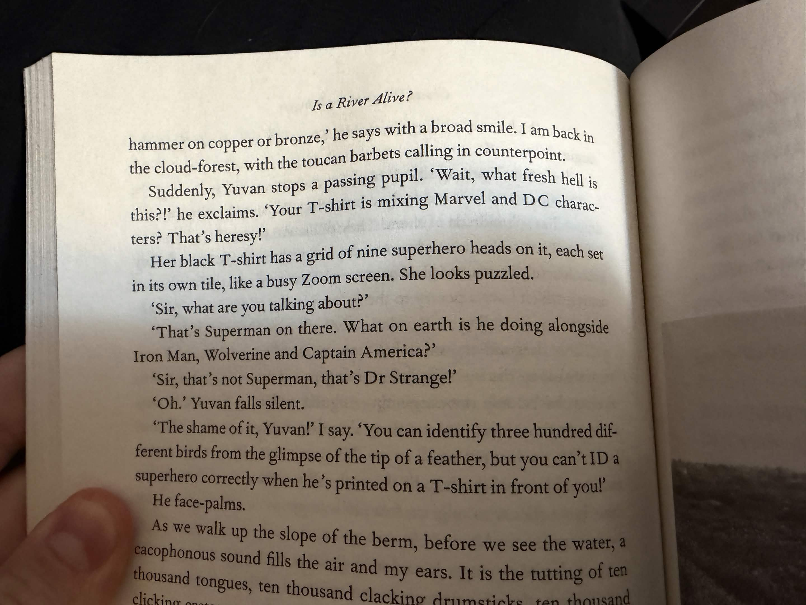

Forewarning: I'm a total asshole in this one and also I talk about my rape nightmares a lot, so.
I've been mulling around since yesterday on the idea my blogging should be more considered. I'm not particularly happy with any recent posts, though/the reason there haven't been many recent ones. I'm between projects right now: IOODancing finished primary development, and I haven't begun development on game 4 yet. I'm unmoored, in passion and in workload. I'm back to maintaining ongoing projects: updating this site, and IOOD, and IOODancing. So any given day is transitory, between these three. And my primary life; I'm a college student once again, this time at the University of Minnesota, for an undergraduate English degree. I'm reading and synthesizing four books right now. Four books! I've never read more than one at a time since I can remember, and right now I'm having to juggle four. My work on projects has given me the inclination to do this, thank god. I'd be up a paddle without a creek without all that I've gained from my writing/development life. But I've a full stack now. And I'm tired — constantly, consistently. I'm in no place to focus on game 4, I keep telling myself, which is likely one of the reasons I haven't started.
I began the fourth book just two days ago for my literary analysis class. I don't remember its real name — in my mind my three classes are "literary analysis", "nature", and "Victorian". Nature is the worst of the three: the professor is pleasant but the material we're reading is abysmal, millennial quirk chungus the author just discovered trees wastes of paper. I feel the urge to put an excerpt from "is a river alive" here but it's genuinely Project Hail Mary bad. Fuck it — here it is.

Straight Colleen Hoover we both laugh at our son's big balls tier bad. But it's creative nonfiction.
Victorian is the high-water mark: Middlemarch, which needs no elaboration. And then Literary Analysis, where as of recent we're reading Beautiful World, Where Are You. Just the first 11 chapters, so far, which feels approximately 1/3rd of the book. My professor told me to go into it blind; I have absolutely no idea the marketed premise, nor anything about Sally Rooney. I haven't read the Wikipedia page, I don't know of any paratext, I've not read a single review. I don't even know its goodreads score — one of the first things I prefer to learn about a book (which is inversely related to its general quality).
I've found it good. Quite good. It's extremely of-its-time (2021?) — the average person is a reddit atheist, and there is social liberalism in the air. The two primary characters — Eileen and Alice — discuss the world as if it's on the cusp of crumbling rather than in the active degeneration of advancing societal dissolution. Not that our current world will end calamitously: everything will just get worse, forever, and we'll all die as serfs from preventable causes. Eileen and Alice discuss this sort of thing, too, they both email each other very intelligently but in an isolated manner. The whole book is isolated: Eileen and Alice constantly talk about sex and dating and the literary sphere (as Alice is an author, and Eileen does copy editing work (if I remember correctly)), and all other art has absolutely zero impact on their lives. Sally Rooney and I write almost identically, though she's comprehensively better at realizing her aims and character relations, their motivations in individual conversations. Again, I know nothing about her, but I can see her in her semiautofictional depiction of Alice: an annoying asshole who has few friends, who speaks intelligently but isolates herself from others in the process. I did that exact same thing when writing Eis in IOOD. But whereas I wrote about art, Sally Rooney writes about love and dating and sex. Nothing I've ever experienced — and which I struggled with writing in IOODancing. I used to joke how the most loveless depiction of romance would be me writing lesbian sex, and then I wrote two female lovers in IOODancing. In their case, at the end, I just copied First Reformed, one of the great movies on societal collapse which is unfortunately by a quite evil man.
A challenge I face when reading Beautiful World, Where Are You is the context in which I'm doing it: for a class, to discuss, with other people. Those other people, who I think about constantly, are dull. Quite dull. I've complained and ranted to everyone in my life the past week about the class discussion we recently had about accessibility in literature: students were complaining that words such as "hermeneutics" and "dialectics" were unapproachable in the theory we were reading, and that authors should (should!) use more accessible language when writing; that these larger words were unnecessary compared to more approachable language. I argued that these bigger words (and I feel like such a fucking idiot for calling these words "bigger" right now — they are not bigger, they are normal words!) have very specific meanings and represent specific, important concepts — because of course, you know? And that if you don't know a word, you can just google it, as we all have comprehensive access to the largest knowledge database in human history, in our pockets, at all times. I don't even remember their argument back — I felt so utterly correct in the moment that my mind didn't even care to remember their rebuttal.
I'm correct, in this argument, which is the worst thing ever. This class makes me feel like some ascended asshole straight from fucking Reddit.com, the arbiter of all logic. It's the worst thing that's happened to my ego in so, so, so long. Well, no, not so long: IOOD was the worst thing that's happened to my ego. Because I'm fucking correct, and everyone else in the class arguing against me is idiotic. You need to know what dialectics is, and if you don't know what dialectics is and you're an English major, you've failed! I had to explain to the class what the 2008 financial crisis was a few weeks ago. It was the primary topic of discussion that day — our professor wanted us to discuss how consumer reading and industry publishing were different in our current crisis compared to previous crises. Except nobody in the entire class knew anything about previous crises — the financial crisis, the oil crisis, anything! The professor asked me to explain the financial crisis, which, you know, horrible for my ego. Really having problems with my ego recently. Everyone in the class is just so so so stupid. How do you not know what the financial crisis is? It is the reason your entire life is how it is! Be more fucking curious! Learn more about the world! Stop fucking complaining about accessibility and approachability; you are paralyzing your mind!
This is all to say: we haven't yet discussed Beautiful World, Where Are You in class yet, and I'm fucking, oh my god, I'm dreading it more than anything in the Horrible World right now. I cannot imagine discussing this book, which is about political discussion between two friends, with that class, in five hours, without wanting to kill myself. Not that I haven't been suicidal today — I had a nightmare last night, where my wife (???) was abducted by satanists (???) who also murdered my entire neighborhood, and then I had to live in fear in my dark and empty house in my dark and empty neighborhood while being surveilled by the satanists, and the suicidality from that nightmare has not yet faded from my waking mind. It wasn't like my rape nightmares: I feel no bodily wrongness, and I do not feel violated. But I wanted to kill myself very deeply then, and I still feel that in my body now. I think I'm going to discuss my nightmares with my psychiatrist finally. I'm meeting with him on Thursday. They've been in this worser state for months now, without relenting. How I wish I could just never dream again.
I still haven't quite recovered from the rape tattoo nightmare, I realized earlier this week, when speaking with Niboe and Kip about RFCK tattoos. I've wanted a slimeheart, near my self-harm scars, since what feels like time immemorial (but which factually cannot be longer than 5.5 years). But not since the rape tattoo nightmare. I have absolutely zero urge. And I think about the cat on my outer elbow, from that nightmare, and I can still feel a wrongness in my gut. These nightmares rob me of what I want. Do they have a syndrome for this? Nightmare syndrome? Okay, yes, there is "nightmare disorder", and I definitely fit the diagnostic criteria, as the nightmares:
✅ Happen often and keep coming back.
✅ Cause severe distress about going to sleep for fear of having another nightmare.
✅ Result in ongoing anxiety or fear, problems with paying attention or memory, daytime sleepiness, or low energy.
✅ Make it hard to function at work, school or in social situations.
✅ Cause behavior problems related to bedtime or fear of the dark.
Man just typing about my nightmares makes me feel comprehensively worse. I don't think I've talked about them to anybody with my voice before. Only typed about it. Similar thing with Krak; until an interview I gave last week, I hadn't actually spoken about what all happened with him with my voice and vocal cords and breath. I had the opportunity a few weeks ago: in my Literary Analysis class, my professor asked about whatever caused us to develop our dedication to reading and become English majors. And, for me, it feels really fucking awful to type this, but I only ever decided to stop being a computer science major because of all that happened with Krak, because he was the one who inspired me to do that in the first place. And, you know, I. It was the only answer I could give, to that question, that I was lowkey sort of platonically groomed. And I was on the verge of saying it. But everyone else's answers, you know, they weren't depressing. I didn't want to be a total buzzkill. So I didn't talk about it. I kind of silently cried and then the class went on.
It's difficult to talk about these sorts of things. Of being lowkey kind of platonically groomed by Krak — I feel compelled to add all the qualifiers: that it wasn't comprehensive, that it was completely platonic. Of the rape nightmares — how do you even speak on how you feel about being raped in a nightmare? I'm not a real-life victim, and no real harm was done, and when you wake up you just have to go on with your day. And it's impossible to find support — I've never been raped, and all the online resources and communities for this sort of thing are for real-life victims reliving this sort of thing from PTSD. I tried discussing it with friends and one of them started with psychoanalysis, which, fuck you, Crime? Fuck you. Am I externalizing how violated I feel from Krak with these rape nightmares? Why am I always raped by women in these nightmares? I don't know. I really don't know. I know so little about myself.